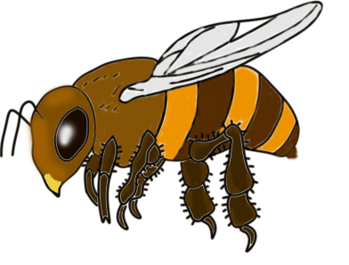
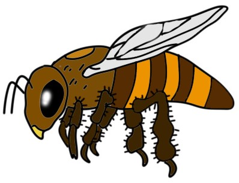
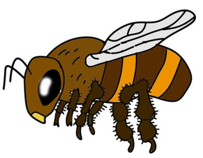

 Історія
Українська степова порода бджіл (Apis mellifra acervorum Scor.) сформувалася у зонах Лісостепу і Степу України. Нині найбільший її масив у Кіровоградській, Вінницькій, Полтавській та Хмельницькій областях і в сусідніх з ними районах П. Л. Снежневський, який багато років працював з українськими степовими бджолами у колишній Херсонській губернії, а потім у Орлі, був вражений їхньою винятковою працьовитістю і витривалістю, здатністю літати на великі відстані (до 7 км) в пошуках корму. Він називав цих бджіл «нашим скарбом».
У 70-х роках минулого століття українських степових бджіл завезли на Далекий схід. Там вони швидко акліматизувалися і розповсюдилися. Є дані про участь їх у формуванні місцевих популяцій бджіл Казахстану та Алтаю. Усе це свідчить про значну екологічну пластичність зазначеної породи.
 Селекційну роботу з українською степовою породою бджіл проводять Інститут бджільництва ім. П. І. Прокоповича УААН, його філіал (м. Гадяч Полтавської області) та кафедра технології виробництва продуктів бджільництва Національного аграрного університету. На жаль, в останні десятиріччя українські бджоли зазнали сильного впливу кавказьких і карпатських, що значно ускладнює ведення селекційної роботи. Ряд пасік лісостепової і степової зони укомплектовано помісями невідомого походження і покоління. Вони менш продуктивні, частіше хворіють на нозематоз, більш схильні до роїння, гірше зимують, ніж чистопородні українські. Надійним способом збереження і поліпшення цієї породи вважається лінійна селекція і масове розмноження відселекціонованого матеріалу. Основні напрями селекційної роботи – збільшення медової продуктивності та яйценоскості маток і зменшення рійливості.
Господарська характеристика
 Українські степові бджоли продуктивно використовують медозбір з білої акації, еспарцету, гречки, липи, соняшнику. На кращих пасіках збирають понад 80 кг меду на сім’ю. Валовий медозбір кращих сімей у деякі роки досягав 120 кг. Бджоли добре пристосовані до збору нектару із степового різнотрав’я.
Бджоли миролюбні, помірно прополісують гніздо, інтенсивно будують стільники і нарощують велику силу сім’ї до основного медозбору, стійкі до ряду захворювань (нозематозу, гнильці, падевого токсикозу)
Українські степові бджоли малорійливі й набагато легше, ніж середньоросійські, переходять з ройового стану в робочий. Для цього інколи буває достатньо зірвати всі ройові маточники і розширити гніздо. Вони добре зимують, більш зимостійкі, ніж карпатські, адже умови зимівлі їх у безлісих степових просторах, відкритих для вітрів, були завжди менш сприятливими, ніж у гірських лісових районах.
Плодючість маток у період найінтенсивнішого розвитку становить 1100 – 1800, а за іншими даними – до 2500 яєць на добу.